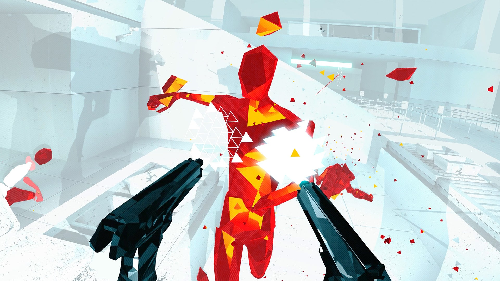

Topic
AR & VR
Introduction
VR and AR get more and more integrated in our lives. It's used not only for the entertainment, but also for education, health, and other important aspects of our lives. It's interesting to explore where it leads us, what possibilities it provides, but also what consequences we might have from using these technologies.
New XR Concept
KNOW YOUR FOOD
Description: The problem with sticking to a healthy eating habits is to actually understand the complexity of all the science behind healthy products. When we go to a grocery store, it’s difficult to understand on spot why some products are healthy and how they would affect our body, or how other products harm our body. With this augmented reality technology users would see in real life the nutritional information about the products, explanation why it’s good/bad for health, what benefits or disadvantages it offers, and also what dishes can be cooked using these products. Users use glasses that allow them to use AR technology, and by looking at the product, they can see nutrition information, health benefits, as well as check the recipes.

Research
Example 1: Superhot VR
Company: Superhot Team
Youtube video
Steam
Wikipedia
Description: SuperHot is a VR game that was created for "7 Day FPS Challenge" in which programmers had one week to develop and present complete functional game. It’s a first-person shooter with some simple plot where the main character is trying to escape. The interesting technology in this game is that the time runs normally only when the gamer moves. The game reacts on your body movements, so if you stay still, nothing is happening in the game, but when you move, your enemies and objects move as well. This allows users to assess the situations in slow motion and makes this game more strategic. This way, unlike most of FPS games, where it relies on fast reaction, this game provides the opportunity to include logic and strategy, and react based on the conclusion made from assessing the situation.
Example 2: ZeroPhobia app
Company: ZeroPhobia
Company's website
Description: ZeroPhobia is the app that is used together with a VR viewer. This app helps people fight their fears of heights and flying, and the company is also working now on the fear of spiders. Using the VR viewer, users are put in the environment they fear. The user’s phone is connected to the VR viewer and acts as a screen, and the app changes the environment based on user’s movements. As the phone is technically attached to the head, the user’s movement affect phone’s position and therefore changes the view in the app. This technology is used in therapy to help people overcome their phobias. While I find the purpose of this technology very valuable, I wonder if VR actually adds up to the therapy of phobias and whether it has an expected result.
Example 3: Guinness World Records
Company: INDE
Project Website
Description: In this project augmented reality is used to allow users to get up close with the world’s record breakers. The interaction is activated by users scanning a logo on the pages of the Guinness World Records book. After scanning specific pages, users can see the animated content appearing on their screen and placed in their environment. The users can encounter a life-size animals, shortest man, or the biggest known spider. The objects in this AR are animated, and users can move their devices around the animated content to get a 360-degree view. Moreover, users can interact with the objects by tapping on the screen, for example irritate the spider and make him hiss on them. I believe integrating this type of technology helps companies to attract people's attention and get their curiosity more than regular books, so it could be actually used to motivate children and adults read more, so it could be a very good contribution in education.
Reflection
I find this topic very interesting to explore and see what advanced technologies already exist. I believe VR and AR can have significant impact in education. Me, as a person who learns better from visuals and experiencing, would appreciate to have such technologies in my studies. It could also prevent some unfortunate events that might happen in the studies that include some risks. For example, the chemistry classes might end up with accidents because of wrong decisions, and students are more prone to wrong decisions while they are studying. I can imagine having chemistry experiments in VR/AR would be safer and even more experimental.
VR and AR open up the possibilities for people who don’t have easy access to some aspects of our lives. For example, I can imagine using it for people to travel virtually, or “meet” their celebrity they would like to meet.
Nevertheless, I find it also scary how these technologies can change our lives. I’m not impressed by the idea of the metaverse, and it rather scares me that people might switch their focus from real life to a virtual environment. In general, I hope these technologies will keep developing, and become more accessible and easy-to-use.